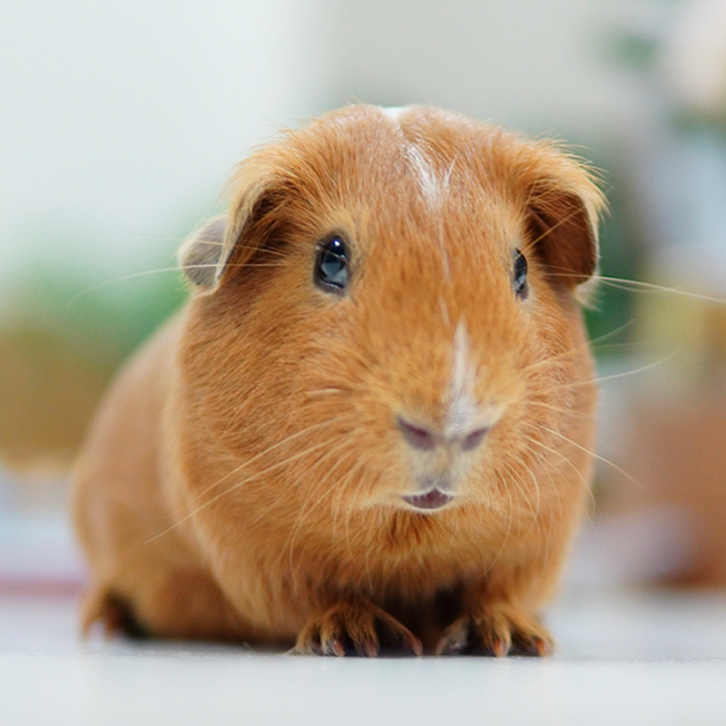

Our Mission
Twin Cities Animal Rescue is a community nonprofit dedicated to helping animals find safe, loving homes and connecting people with opportunities to adopt, foster, and volunteer.
Our Impact
We help rescue animals connect with adoptive and foster families.
Our volunteers support animals and community rescue efforts.
Community involvement helps give animals a second chance.
Meet a Rescue Pet

How You Can Help
You can support Twin Cities Animal Rescue by adopting an animal, becoming a foster, volunteering your time, or supporting rescue efforts in the community.